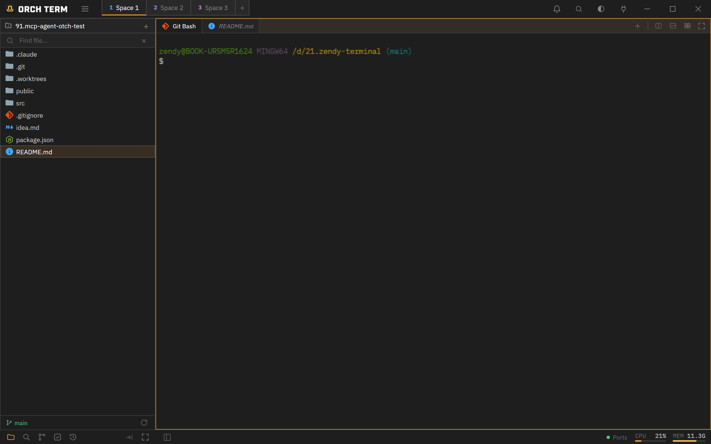
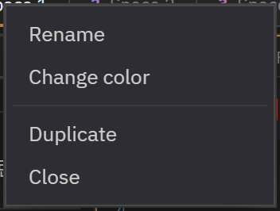

Core features · Spaces Switchable layouts
Spaces
A Space is an independent layout you switch to wholesale, like a tmux or i3 workspace. Each Space keeps its own split tree (panes · tabs) and file Explorer, so you swap between them in one click via titlebar chips.
Space chips — switch from the titlebar
The Space list lines up as chips in the titlebar. The active chip is highlighted with an accent underline, and the chip number points to its Ctrl+number switch position. The at the far end opens a new Space (empty Explorer + one terminal).

Inline-edit a chip's name and color by double-clicking, and close it with the × that appears on hover (the last remaining Space can't be closed). Drag to reorder chips, or drop a tab onto a chip to move it to another Space.
Switching (Ctrl+1‥9)
Switch by clicking a chip or pressing Ctrl+1‥9 (by titlebar position). Switching doesn't partially repaint the screen — it swaps the whole layout. The terminals and browsers in the Space you leave stay alive, so when you return the output and scrollback of an in-progress command are preserved.
| Key | Action |
|---|---|
| Ctrl+1 ‥ 9 | Switch to the 1st‥9th Space by position |
| Click a chip | Switch to that Space |
| Double-click a chip | Inline-edit name + color |
Per-Space split tree · Explorer
Each Space wholly owns its own state. Switching is swapping that bundle.
Independent split tree
The split tree, active pane, and maximize state are kept per Space. One Space can be a 4-way split while another stays a single terminal.
Per-Space Explorer
It has its own project list and active project. When you switch, the left Explorer changes to that Space's tree, and a new terminal starts at the active project root.
Collapse · width · mode
The Explorer collapse/width and the sidebar mode (files · search · Git) are also remembered per Space and restored on switch and restart.
Right-click menu · full duplicate
Right-click a chip to open the Rename / Change color / Duplicate / Close menu. Name and color open the same inline editor as double-clicking.

Duplicate copies the whole Space (tabs · projects · layout · color) into a new Space and switches to it right away. If there are already 9 Spaces, it's disabled in the menu.
Live persistence · restore
Every time you switch Spaces or touch a tab, split, or project, the state is saved automatically, so the layout is restored when you relaunch the app. If the saved state is corrupted, it safely falls back to a default single Space.
- Structure only is saved. A terminal remembers only its directory (cwd) and starts fresh there on restart (scrollback is lost). Editor and browser tabs reopen.
- Custom tab names persist. Terminal tab names you changed inline are kept after restart (the icon follows the shell).
Background completion notification
When a task running in a background Space finishes, a green dot blinks on that Space's chip to let you know — so even while you're in another Space, you can tell it's done just by glancing at the chip.
docs) chip = a completion signal for that Space's task.